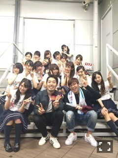
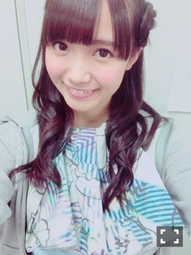
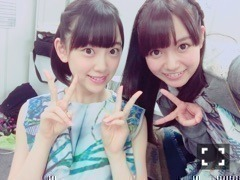

| 2015/10 25 Sun | ひめたん-0o0-その583 |

アンダーライブ4thシーズン
千秋楽を迎えました！
12thアンダーメンバーとしての活動も
個別握手会を除いては
今日にて終了......ということで
半年間お世話になりました。
シングル製作で始まり
全国ツアー、雑誌撮影、
全握ライブに仙台ライブなど
いろんな活動をみんなとしてきましたが
アンダーライブでさらに
結束力が高まって
濃い10日間を過ごすことができました。
ひなちま・みり愛は参加出来なかったけれど
みんなは2人の分までステージに立って
気持ちは18人で完走しました
きっと2人も私たちのことを思いながら
頑張ってくれてるんじゃないかな、と
私は信じております。
私、前回はセンターとして
引っ張っていく立場でありながら
メンバーみんなに支えてもらって
背中を押してもらってばかりで。
だから今回は恩返し......って
表現があってるかわからないけれど
少しでも頼もしい存在になれたらいいな、
みんなを支える立場に徹しよう、
それが今回の個人的なテーマでした。
あとは「魅せる」ということも学びました。
最近、長年に渡って身体に染み付いた
私のダンスの感覚を
改めて見直すきっかけがあって
それが早速実践できるステージが
このアンダーライブでした
伝わった......かどうかはおいといて
そんな気持ちで踊ったよという
報告だけしておきます。
これから全握ライブ、武道館などで
行かせていけたらなと思っているので
是非機会があったら見てみて下さい。
あと、そう、髪型が変わって
雰囲気も変わったねと言われます
嬉しい( ˇωˇ )
本日、千秋楽のWアンコールで
「嫉妬の権利」ライブ初披露しました。
次はみり愛も揃って
21人のフルメンバーで歌いたい！
この曲を引っ提げての武道館公演も
自分の役割を探しながら
頑張ろうと思っています。
私の中でアンダーライブは
恒例になりつつあったけれど
こうして4thまで続けるなんて
実はとても大変なことなんだよね。
期待してくださるファンの皆さんがいて、
ステージを用意してくださる
スタッフさんがいて、
一緒に頑張ってくれるメンバーがいて
初めて成り立つものであって
そのことはステージに立つ人間として
絶対に忘れてはいけないんだなと
改めて感じました。
こうしてライブができることは
当たり前なことじゃないんだなって思うと
1公演1公演が本当に大切で
全部かけがえのない時間だったんだなあ......
今日の夜公演に
オリラジさんのお二人が
来てくださいました！
ラジオの生放送の直前にも関わらず
最後まで残ってくださって
サイリウム振って応援してくださいました。
早い段階で見つけちゃったから
緊張した～(´｡•ω•｡`)
けれど、普段のらじらーとは違う
アイドルとしてのパフォーマンスを
いつか見て欲しいなって思っていたので
今日は本当に嬉しかった......！
来週のらじらーで感想とか聞けるのかな？
新曲のお話とか、アンダーライブとか
話したいことはいろいろあるけれど
うーん、野球中継次第かな？ふふ。


未央ちゃんセンターお疲れ様でした♡
覚えなきゃいけない曲多かったり
はじめてのことばかりで
きっと1番大変だったよね。
奮闘する姿がとてもかっこよくて
最後までついていこう！って思いました
あ、そうそう！
次回のらじらー！の告知もしておこう♡
乃木坂回ということで
高山一実ちゃん、能條愛未ちゃんが
来てくれます。
アメイジング対決リベンジマッチ
しかも愛未が加わっての三つ巴ということで
お便りお待ちしてまーす♪
ふたりへのメッセージもよろしくね。
お便りはこちらから↓
昨日の乃木坂46SHOWでは
「嫉妬の権利」ライブパフォーマンスを
させていただきました。
告知出来なくてごめんね（ ; ; ）
観てくださった方は感想聞かせて下さいな
私はもう本当にこの曲好きなんだけど
特に1サビ入る直前のダンスがもう大好き。
かりんちゃんがこの曲の私の表情
褒めてくれました。
嫉妬の権利！！感が出てるらしい(笑)
明日はおに魂。
28日は生ドル。
是非聞いてください、観てください。
ごめんねなんか今日の日記の
書き殴ったみたいな文章。
ライブ終わってちゃんと消化してから
改めてご挨拶しようとしてたんだけど
なんていうか、ライブ終わって
お風呂入ってたら急に
日記書きたい衝動に駆られて( ´ ･ω･ ` )

(＊´・ω・＊)
コメント(965)
2015/10/25 23:30